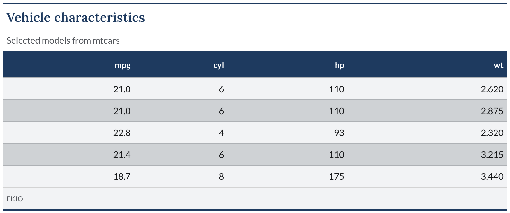

ekiotable applies the EKIO visual identity to gt tables, with the Lora and Lato type pairing used across EKIO charts and reports.
Installation
ekiotable and its only non-CRAN dependency, ekioplot, ship from the viniciusoike r-universe. Neither package is on CRAN. The command below installs both; install.packages() resolves ekioplot from the same universe automatically.
install.packages(
"ekiotable",
repos = c("https://viniciusoike.r-universe.dev", "https://cloud.r-project.org")
)Themes
ekiotable ships three themes for gt tables:
-
gt_theme_ekio()— the default EKIO theme: filled blue column labels, banded row groups, and an automatic EKIO source note. -
gt_theme_ekio_alt()— experimental alternative: keeps the blue header band, replaces filled group bands with Baltic Blue rules, and uses tabular numerals. No footer is added. -
gt_theme_hokusai()— a minimal blue-and-paper theme with four palettes (mountain,wind,blossom,lake), optional gridlines, and no footer.
Usage
gt_theme_ekio() styles headers, column labels, row groups, summary rows, stubs, source notes, and footnotes, and adds an EKIO source note by default:
gt_theme_ekio(
data,
table_width = "100%",
font_size = 14,
stripe = TRUE,
add_footer = TRUE
)